Demo visual · datos simulados
Control de pagos escolares
Una muestra del flujo interno para consultar alumnos, registrar pagos y emitir comprobantes.
El sistema separa alumnos, tutores, adeudos, pagos y recibos en modelos relacionales propios, con un ciclo de vida claro por adeudo: se genera al asignar un concepto de pago a un ciclo escolar, y se liquida al registrar un pago que puede cubrir varios adeudos a la vez.
Cada pago emite un recibo con folio consecutivo, listo para imprimir o enviar por correo y WhatsApp. El panel del director agrega esa misma información en indicadores, gráficas de distribución por concepto y tendencia de recaudación, exportables a PDF.
De la caja al panel del director
Control de pagos
Director · entorno demoCiclo actual
Este mes
Requieren seguimiento
Movimientos recientes
| Folio | Alumno | Concepto | Estado |
|---|---|---|---|
| 000184 | Alumno Demo 01 | Mensualidad | Pagado |
| 000183 | Alumno Demo 02 | Inscripción | Pagado |
| 000182 | Alumno Demo 03 | Libros | Pendiente |
Directorio demo
| Clave | Alumno | Nivel | Estado |
|---|---|---|---|
| ALU-001 | Alumno Demo 01 | Secundaria | Activo |
| ALU-002 | Alumno Demo 02 | Preparatoria | Activo |
| ALU-003 | Alumno Demo 03 | Secundaria | Adeudo |
Registrar pago
Recibo de pago
RECIBO · DEMO
Folio: 000184
Alumno: Alumno Demo 01
Concepto: Mensualidad
Total: $1,250.00
Acciones
En el sistema real esta vista puede imprimirse o convertirse en PDF.
Flujo de control de pagos
Recorrido visual de consulta, registro y recibos usando información completamente ficticia.
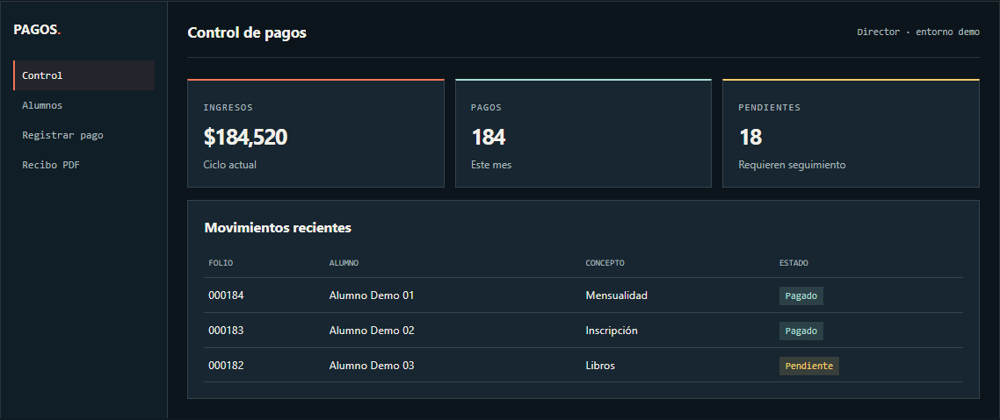
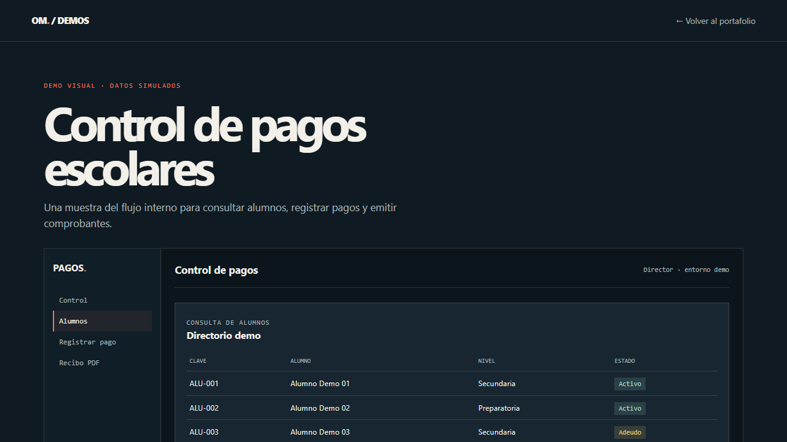
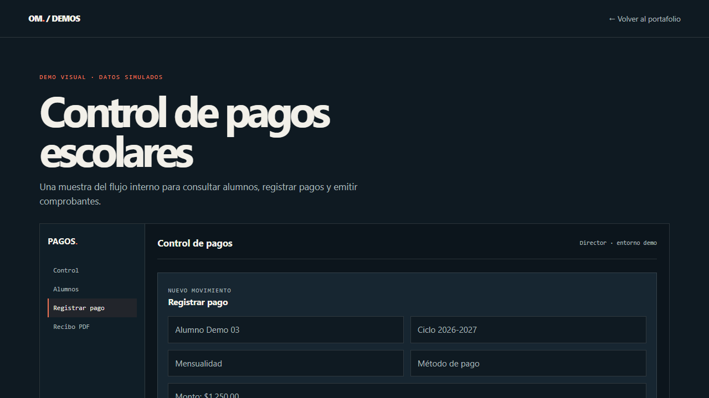
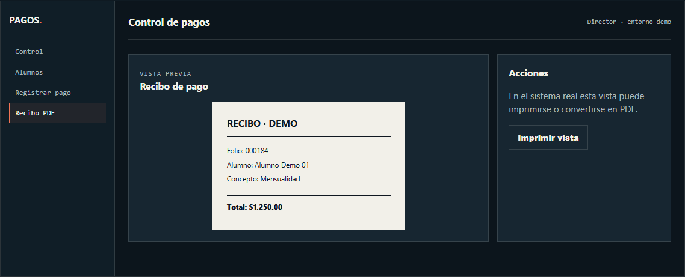
Flask, SQLAlchemy y ReportLab en ejecución
Capturas tomadas corriendo el backend real sobre una base de datos aislada con datos de prueba: 120 alumnos, 1 200 pagos y sus recibos.
Acceso institucional y panel del director, con gráficas de distribución y tendencia:
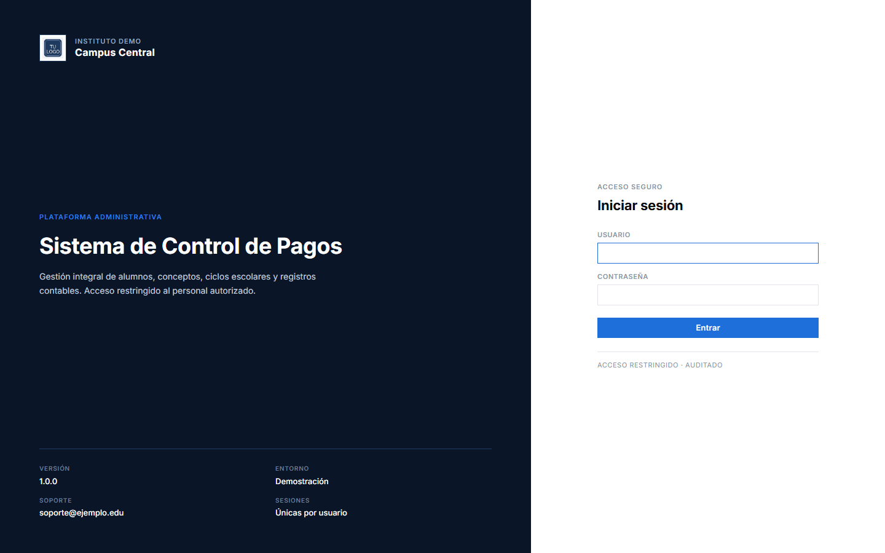
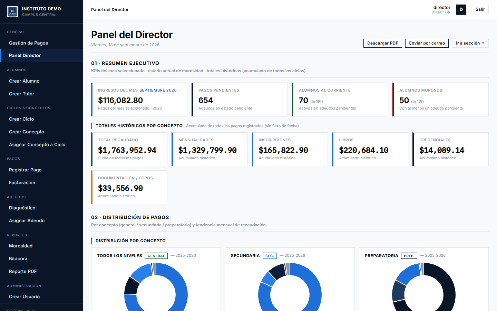
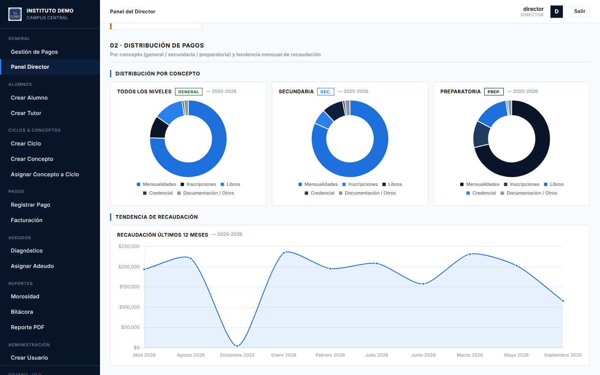
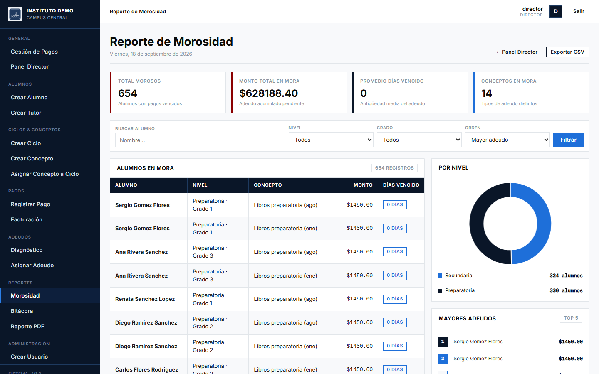
Gestión de pagos, registro de un pago nuevo y el recibo que genera:
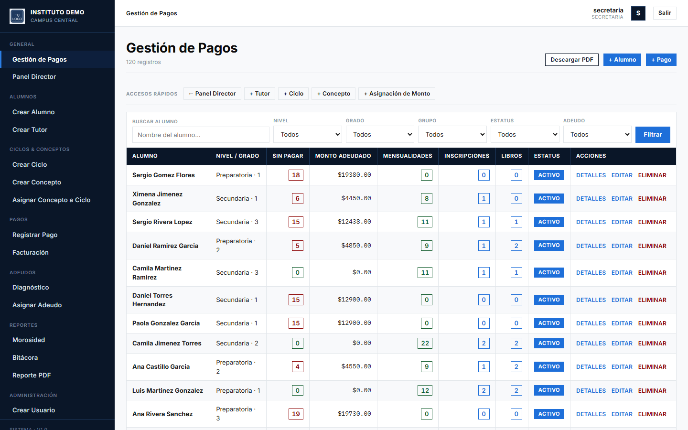
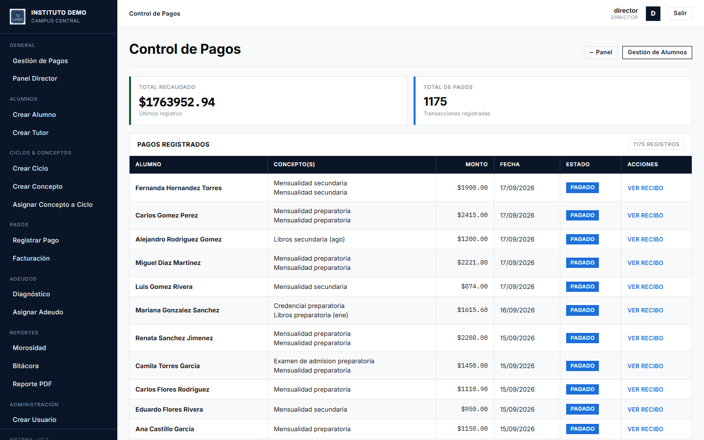
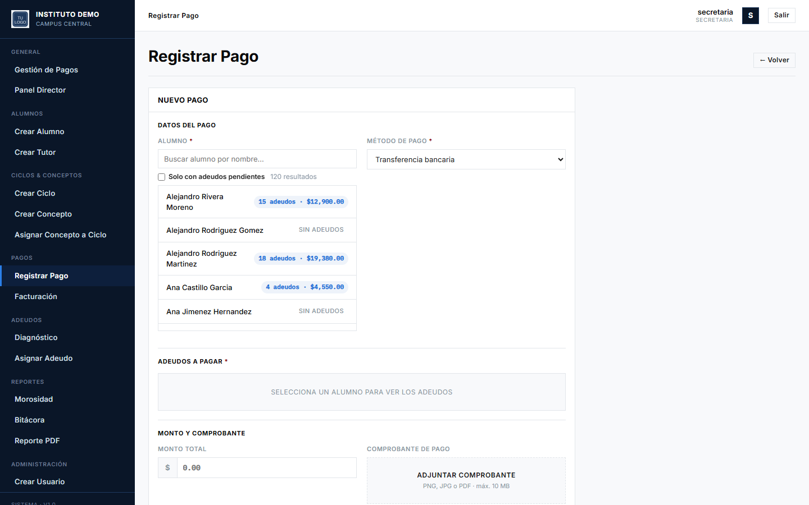
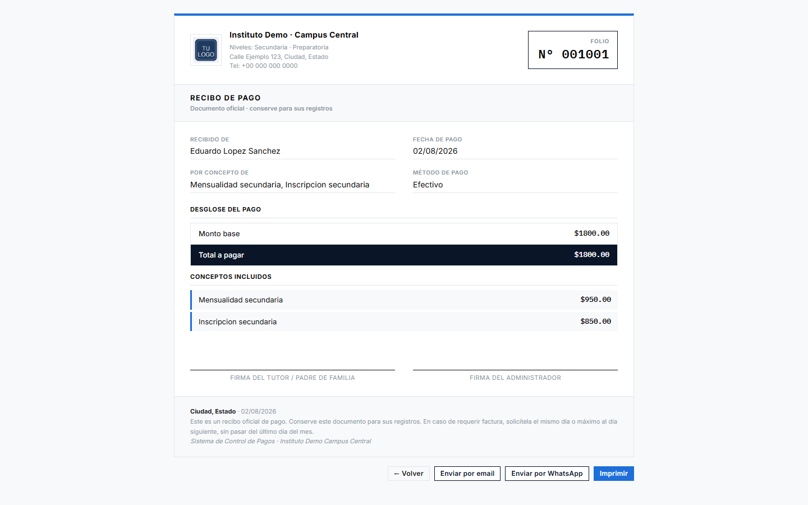
Bitácora de operaciones, para trazabilidad administrativa:
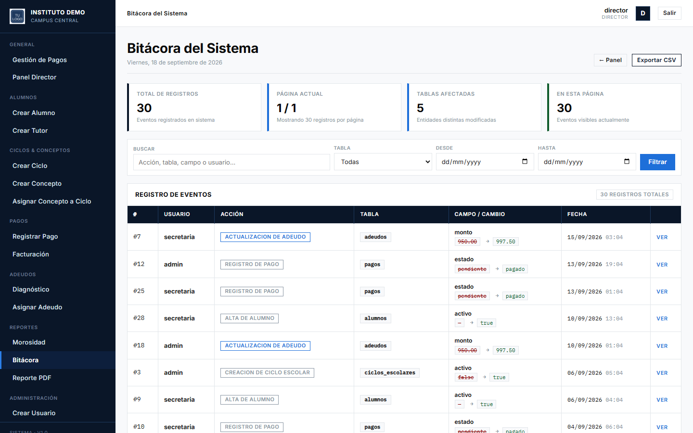